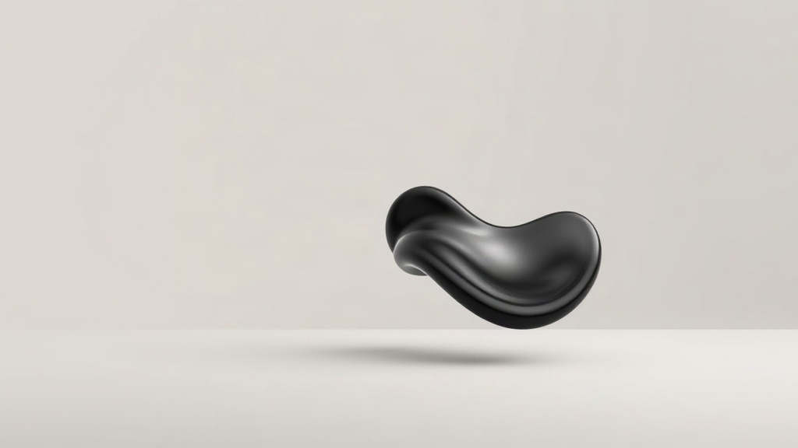
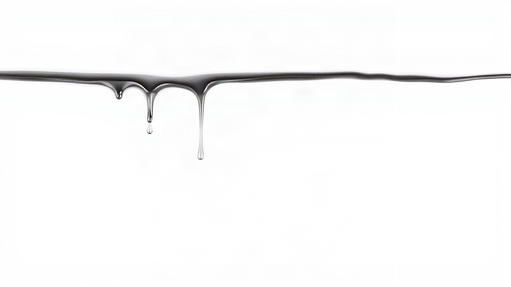
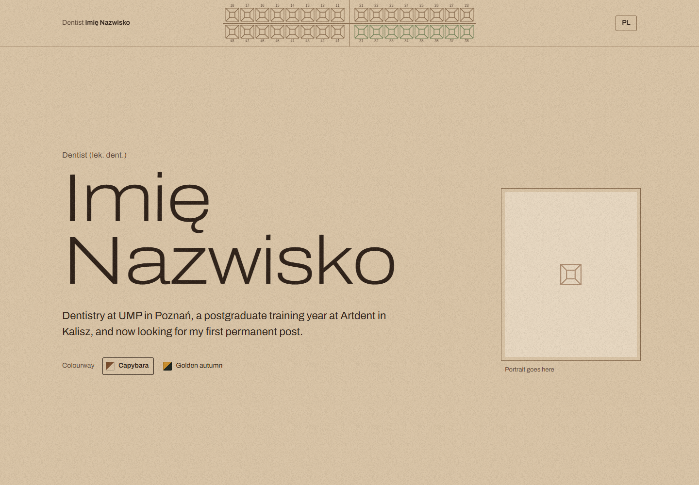
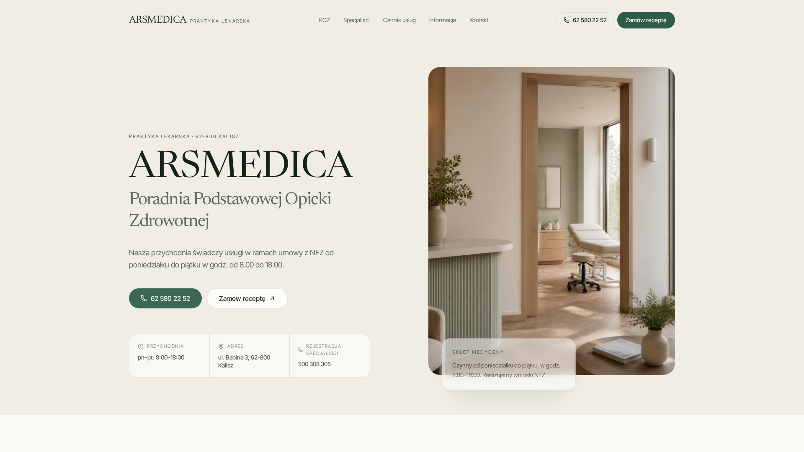
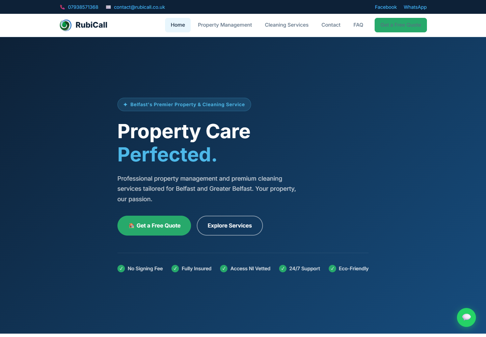
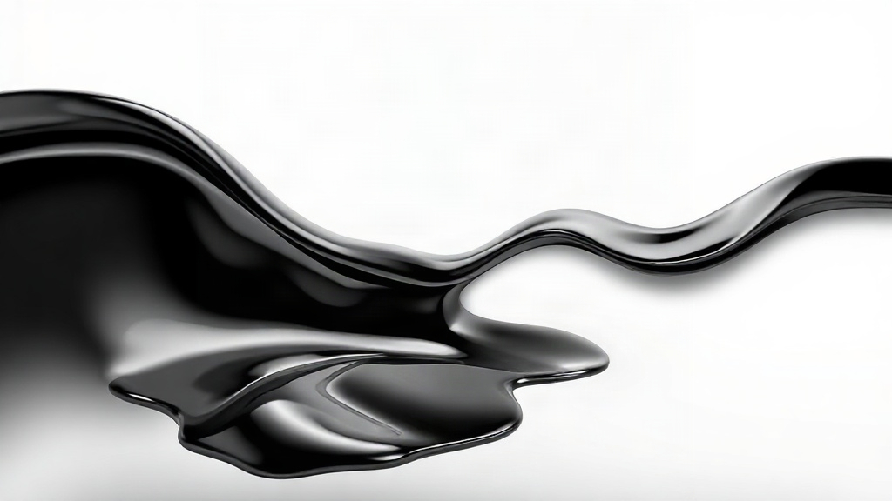

Liquid chrome: the scroll story
Concept only, made with cheap AI images and clips. Text is placed by hand. The real build uses your Command Centre shader, not these renders.

Dominik Machowiak
Strony internetowe dla firm z Kalisza i okolic.
1. LandingOne dark chrome blob, your name, one line. Nothing else.
Scroll: fast sweepThe blob breaks into a wave and floods the screen in under a second.
Co robię
Strony, które klienci rozumieją od pierwszego spojrzenia. Projekt, tekst i wdrożenie w jednym miejscu.
2. What we doFull-screen chrome, one opaque panel. Same as the contact banner you like.
Scroll: drip edgeThe chrome drains upward and leaves drips on the white page.




3. ProjectsPlain white, swipe through every real project. Drips stay at the top edge.
Scroll: chrome returnsThe drip line swells and pours back down over the page.

Porozmawiajmy
Napisz albo zadzwoń.
4. End screenContact sits on the chrome. Slot for one more screen before it, still open.
Open questions
- Is screen 2 (what we do) on chrome, or white with chrome only at the edges?
- What goes between projects and the end screen?